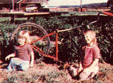
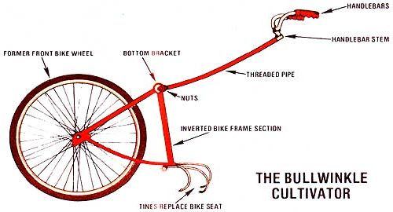

Issue # 70 - July/August 1981
Combine a iunked bicycle with a weed-filled vegetable patch and a bit of ingenuity, and you'll have . .
Each year, as winter makes its molassess-low way toward spring, my wife and I can barely contain our eagerness to get to work in the garden again . . . to till, plant, weed, meditate, and generally enjoy one of the deep and subtle satisfactions of life. (Thoreau once described gardening as "making the earth say beans instead of grass".)
And every summer-as we discovered hordes of undesired plants growing just as steadily as our intended crops-we wished we had a good hand-powered push cultivator. But alas, the $30 to $50 purchase price of the classic garden implements always overpowered our desire to own one.
A year ago, though, I finally noticed the resemblance between that common weeding tool and the front wheel/main chassis of an ordinary one-speed bicycle. Before long, 1'd figured out how to convert a discarded two-wheel transporter into a functioning garden cultivator.
First, I cut off the tubing in front of both the bike's seat and its main sprocket .. . leaving the triangle that forms the back part of the frame intact. I then replaced the cycle's rear wheel with its front one and removed the pedals, crank, chain, front sprocket, and internal parts from the bike's drive mechanism. Next, I turned the trimmed-down unit upside down and replaced the bike's seat with a bolted-on set of cultivator tines! ([,had these lying around, but they can be bought at most hardware stores.)
At this point, my cultivator's body had taken shape . . . the tool just needed a steering mechanism. I used a section of threaded pipe for the cultivator's shaft. To attach this conduit to the former bike's bottom bracket, I cut a hole through the side of this frame cylinder, thrust one end of the pipe into this opening, and secured it in place with nuts on both the inside and outside of the bracket.
Then I used the handlebar's original collar clamp to secure the bike's grips to the other end of the pipe section . . . and-behold!-I had created the Fabulous Bullwinkle Garden Cultivator (named after the famous cartoon moose that the device sort of resembles).
So if you too have dreamed of having your own big-wheeled garden tool, consider giving a discarded bicycle a new use in life. After all, the Fabulous Bullwinkle Garden Cultivator may not look classy . . . but it really works.
|
 |
 |
|